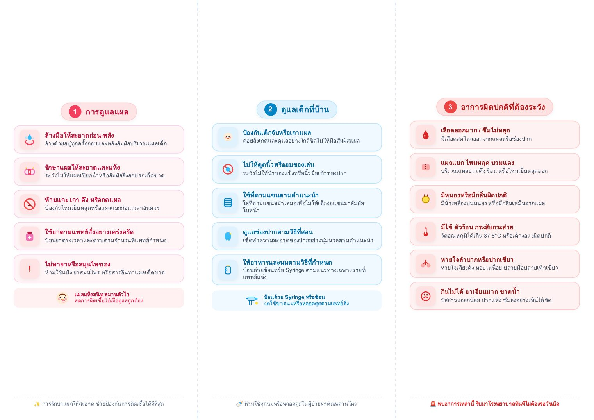

การดูแลแผล
- ล้างมือให้สะอาดก่อน-หลัง ล้างด้วยสบู่ทุกครั้งก่อนและหลังสัมผัสบริเวณแผลเด็ก
- รักษาแผลให้สะอาดและแห้ง ระวังไม่ให้แผลเปียกน้ำหรือสัมผัสสิ่งสกปรกเด็ดขาด
- ห้ามแกะ เกา ดึง หรือกดแผล ป้องกันไหมเย็บหลุดหรือแผลแยกก่อนเวลาอันควร
- ใช้ยาตามแพทย์สั่งอย่างเคร่งครัด ป้อนยาตรงเวลาและครบตามจำนวนที่แพทย์กำหนด
- ไม่ทายาหรือสมุนไพรเอง ห้ามใช้แป้ง ยาสมุนไพร หรือสารอื่นทาแผลเด็ดขาด
ดูแลเด็กที่บ้าน
- ป้องกันเด็กจับหรือเกาแผล คอยสังเกตและดูแลอย่างใกล้ชิดไม่ให้มือสัมผัสแผล
- ไม่ให้ดูดนิ้วหรืออมของเล่น ระวังไม่ให้นำของแข็งหรือนิ้วมือเข้าช่องปาก
- ใช้ที่ดามแขนตามคำแนะนำ ใส่ที่ดามแขนสม่ำเสมอเพื่อไม่ให้เด็กงอแขนมาสัมผัสใบหน้า
- ดูแลช่องปากตามวิธีที่สอน เช็ดทำความสะอาดช่องปากอย่างนุ่มนวลตามคำแนะนำ
- ให้อาหารและนมตามวิธีที่กำหนด ป้อนด้วยช้อนหรือ Syringe ตามแนวทางเฉพาะรายที่แพทย์แจ้ง
อาการผิดปกติที่ต้องระวัง
- เลือดออกมาก / ซึมไม่หยุด มีเลือดสดไหลออกจากแผลหรือช่องปาก
- แผลแยก ไหมหลุด บวมแดง บริเวณแผลบวมตึง ร้อน หรือไหมเย็บหลุดออก
- มีหนองหรือมีกลิ่นผิดปกติ มีน้ำเหลืองปนหนอง หรือมีกลิ่นเหม็นจากแผล
- มีไข้ ตัวร้อน กระสับกระส่าย วัดอุณหภูมิได้เกิน 37.8°C หรือเด็กงอแงผิดปกติ
- หายใจลำบากหรือปากเขียว หายใจเสียงดัง หอบเหนื่อย ปลายมือปลายเท้าเขียว
- กินไม่ได้ อาเจียนมาก ขาดน้ำ ปัสสาวะออกน้อย ปากแห้ง ซึมลงอย่างเห็นได้ชัด
เมื่อไรต้องมาโรงพยาบาล
หากพบอาการผิดปกติข้อใดข้อหนึ่ง ให้รีบพาไปโรงพยาบาลใกล้บ้าน หรือมาพบแพทย์ก่อนวันนัดทันที
มาตรวจตามนัด
- มาตรวจตามนัดทุกครั้ง เพื่อประเมินแผลผ่าตัด ป้องกันภาวะแทรกซ้อน และติดตามการฟื้นตัวอย่างต่อเนื่อง
- ใบนัดและสมุดสุขภาพเด็ก นำติดตัวมาทุกครั้งเพื่อบันทึกประวัติ
- ยาเดิมที่กำลังรับประทาน นำมาให้แพทย์ตรวจเช็กปริมาณและขนาด
- นมและอุปกรณ์ดูแลเด็ก เตรียมของใช้จำเป็นสำหรับลูกน้อยระหว่างรอ
- หากไม่สะดวกตามวันนัด กรุณาโทรเลื่อนล่วงหน้า
ภาพประกอบ (แตะเพื่อขยาย)

เอกสารดาวน์โหลด
ดาวน์โหลดแผ่นพับการดูแลเด็กเมื่อกลับบ้าน (PDF)มีข้อสงสัย ติดต่อ หอผู้ป่วยศัลยกรรมทางเดินปัสสาวะชาย ตกแต่ง แผลไฟไหม้ โรงพยาบาลพุทธชินราช พิษณุโลก โทร 055-270-300 ต่อ 1846, 18407